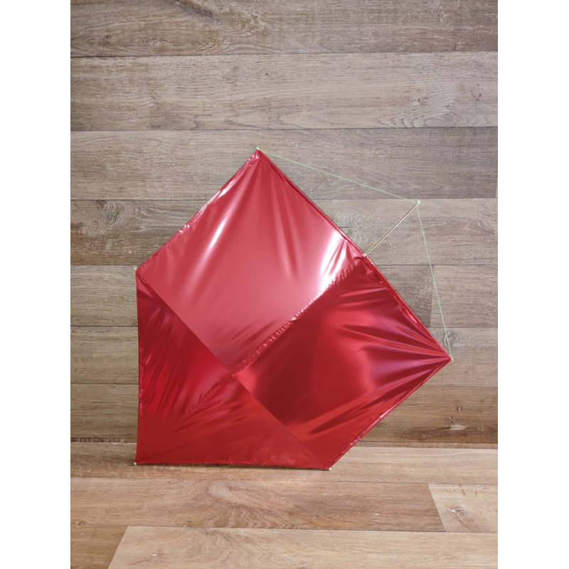
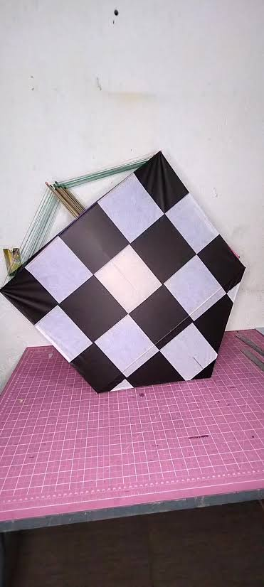
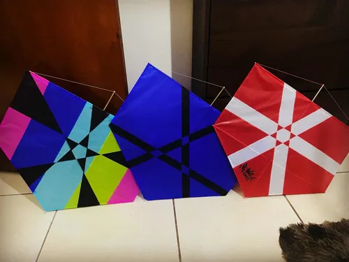

A pipa, papagaio de papel, quadrado ou arraia é um brinquedo feito de
papel sobre uma estrutura de varetas que usa a forçado vento para voar
enquanto é mantida presa por um fio segurado pelo operador. Conforme
o modelo pode ter uma rabiola ou rabo.
A pipa nasceu na China antiga por volta de 1200 a.C., feitas de seda e
bambu. O primeiro relato escrito sobre pipas empinadas é de cerca de
200 a.C. Os arquivos mencionam pipas gigantescas, capazes de
transportar um homem no ar, destinadas a observar a posição do inimigo.
Os movimentos e as cores das pipas eram mensagens transmitidas à
distância entre destacamentos militares. O imperador chinês Wu que
reinou entre 141 e 87 a.C., usou pipas para pedir ajuda quando estava
cercado pelas tropas inimigas em Nanjing.



| Caçadeira de 62 cm | Latão de 72 cm | Quadrado de 50 cm |
|---|---|---|
| Pipa Rápida | Pipa Moderada | Pipa Lenta | Relo curto | Relo média distância | Relo Isolado |